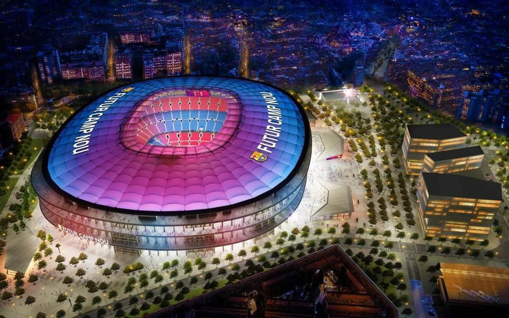
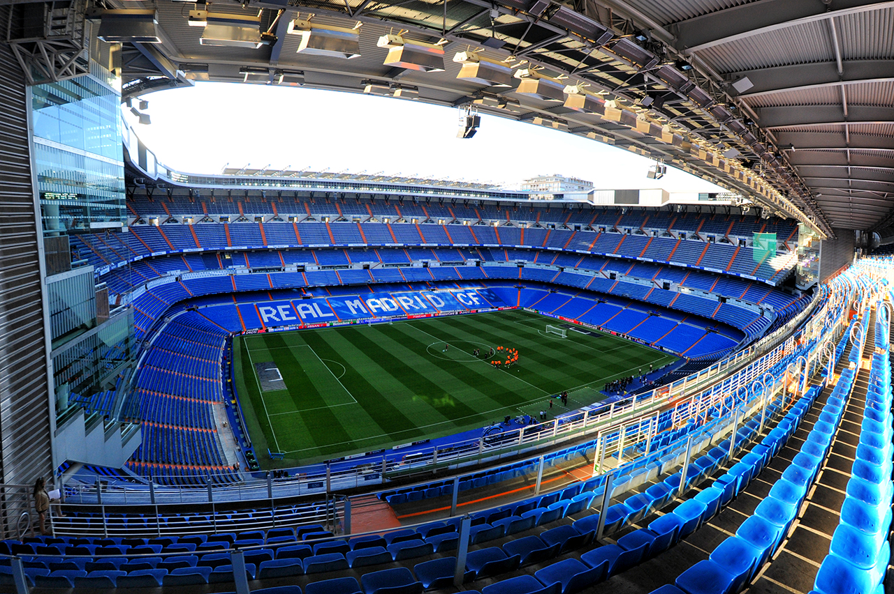

Estadio Allianz Arena
Estadio donde es local el equipo de Fútbol Bayern de Múnich, ubicado en el barrio de Fröttmaning, al norte de Múnich, en el estado federado de Baviera, Alemania.

Estadio Camp Nou
Es un recinto deportivo, propiedad del Fútbol Club Barcelona, ubicado en el distrito de Les Corts de la ciudad de Barcelona, España. Se inauguró el 24 de septiembre de 1957. Con un aforo de 99 354, es el estadio con mayor capacidad de Europa y el tercero del mundo.
Estadio Santiago Bernabeu
Recinto deportivo propiedad del Real Madrid Club de Fútbol, ubicado en plena Castellana, en el distrito de Chamartín de Madrid, España. Se inauguró el 14 de diciembre de 1947 y su aforo actualmente es de 78 297 espectadores.
Estadio Metropolitano Roberto Melendez
es un escenario para la práctica del fútbol y el atletismo en Barranquilla, Colombia. Fue inaugurado el 11 de mayo de 1986, sustituyendo al estadio Municipal como principal escenario para la práctica del fútbol y como sede del Junior de Barranquilla. El Metropolitano es también sede de la Selección Colombia para sus partidos como local por las eliminatorias a la Copa del Mundo. La Selección ha clasificado cinco de las siete veces en que este estadio ha sido sede de las eliminatorias.